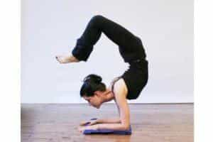
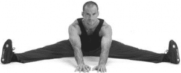

< < < Back
Why It’s Necessary To Relax Into A Stretch – Return Of Kings
In a previous article, I discussed stretching—namely, why stretching is important for the masculine man, and several stretches that you should use in your training to maximize your physical fitness. And while that advice is still valid, I neglected a very important concept in that first article: the techniques that detail how to stretch.
I am not referring to a specific stretch or some sort of hypothetical “stretching mindset,” but rather a set of techniques that can be utilized for any stretch to increase ones flexibility immediately. But before I can discuss those, I have to discuss the incorrect way of stretching that many people still use.
How Not To Stretch
Many people believe that stretching is a literal act of forcing the muscles and connective tissue to stretch—avoid this at all costs! First and foremost, as I have discussed previously in these pages, you should never apply any stretching pressure to the connective tissue. They evolved solely to “hold fast” and keep things in one piece, they should never be stretched at all!
The muscles are the anatomical feature that stretches, as they evolved to do. When stretching, your body should always be positioned in a way where the connective tissues are stable and the muscles are moving.
Even when you are positioned properly, no part of stretching should involve the athlete forcing his muscles to stretch, as that risks muscular tearing which is a nagging injury that never truly goes away. This is because the human body has naturally evolved what is referred to as the “anti-stretch reflex” to prevent muscular tearing-stretching the muscles increases in difficulty the farther and deeper the stretch is, and your body responds to this stress with pain. This is a biological sign telling you that if you go further you’ll be risking muscle tears, and should normally be a heeded warning.
However, if you want to do advanced stretching (such as that nigh-impossible benchmark of fitness the splits), you will have to find a way to overcome this reflex without hurting yourself. And as luck would have it, there is!

Relax Into Stretching
Reflexes can be overcome with gradual and repeated practice—just ask your friendly neighborhood hooker about how she overcame her gag reflex! Similarly, your anti-stretch reflex that keeps your “joints” (actually your muscles) stiff and immobile can be overcome with a few techniques.
The most basic of these techniques is the one that I have had the best results with (as usual, the simple but difficult answer is usually the correct one), and that is the titular concept of “relaxing into a stretch”—with thanks to Pavel Tsatsouline for naming the concept.
To use this technique, take an easy form of the stretch you want to do: using the splits as an example, you would do a seated groin stretch. Engage the stretch just to the point where you feel tension in the target muscle, and then…sit and wait.

Yes, paradoxically, relaxation is the key to increasing your physical fitness in this context. You are literally going to sit there and wait for your muscles to stop fighting the stretch—in other words, you’re going to exhaust your reflex until it stops being reflexive.
This is not something that happens quickly—from my experience, it will take 5-10 minutes per stretch, so it is perfectly acceptable for you to get a book or watch TV while doing this. As a side note, this is literally the only time where it’s acceptable to have a visual distraction during exercise, in my opinion.
As you might expect, once your muscles have relaxed and the pain has melted away, you can increase the stretch a little bit more, and hold it for another 10 minutes. Repeat this process until your muscles are in pain and you judge that you can’t go any further—this is a personal call that you will have to decide for yourself, as I can’t judge when your muscles are demanding you to stop.
This technique can be utilized for any stretch, and in many cases will give you the progress that you so desire. However, there are other methods in the “Relax Into Stretch” family of exercises that can be utilized as well, such as meditation—mentally relaxing will lead to muscular relaxation.
Or you can try “forced relaxation”, where you flex the muscle simultaneously while stretching, forcing the muscle to relax.

Either way you slice it, don’t just brute force your stretching, utilize these techniques for better results.
Read More: Why Stretching Is Essential For The Body (With 6 Beginner Stretches To Get You Started)